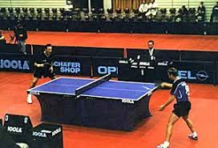

i play badminton Badminton is a racquet sport played using racquets to hit a shuttlecock across a net. Although it may be played with larger teams, the most common forms of the game are "singles" (with one player per side) and "doubles" (with two players per side). Badminton is often played as a casual outdoor activity in a yard or on a beach; formal games are played on a rectangular indoor court. Points are scored by striking the shuttlecock with the racquet and landing it within the opposing side's half of the court. Each side may only strike the shuttlecock once before it passes over the net. Play ends once the shuttlecock has struck the floor or if a fault has been called by the umpire, service judge, or (in their absence) the opposing side
Table tennis, also known as ping-pong, is a sport in which two or four players hit a lightweight ball back and forth across a table using small rackets. The game takes place on a hard table divided by a net. Except for the initial serve, the rules are generally as follows: players must allow a ball played toward them to bounce one time on their side of the table, and must return it so that it bounces on the opposite side at least once. A point is scored when a player fails to return the ball within the rules. Play is fast and demands quick reactions. Spinning the ball alters its trajectory and limits an opponent's options, giving the hitter a great advantage.
.